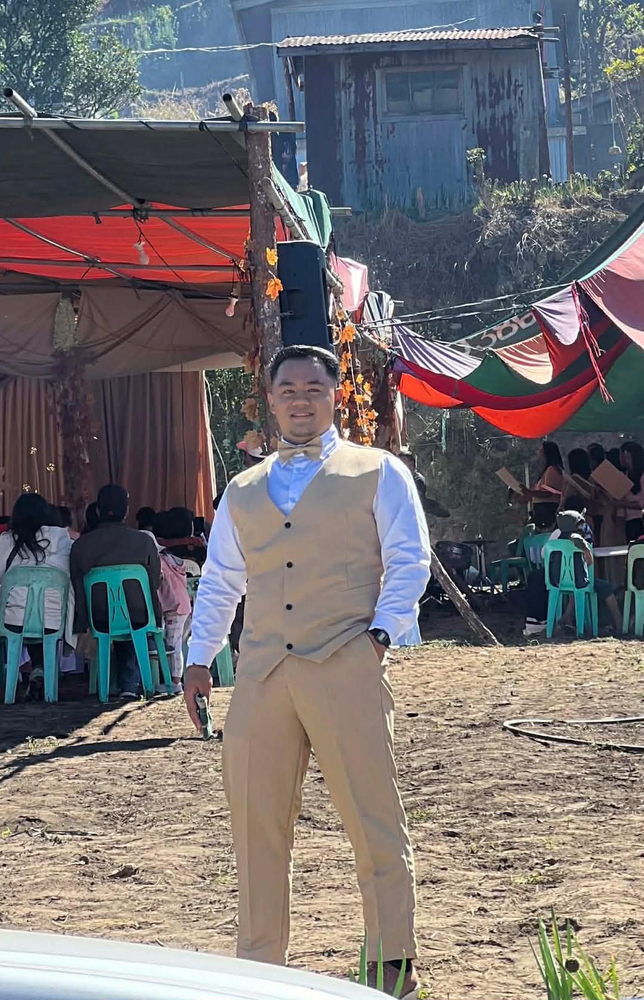

About Me
Hi! I am Nathaniel Lance Baldazan Bandao, a 21-year-old BSIT student at King's College of the Philippines. I am currently in my second year, developing a strong foundation in IT infrastructure and database management.
Beyond my academic journey, I am passionate about web design and development, where I enjoy blending creativity with technical precision. I take pride in building responsive layouts that adapt seamlessly across devices, and I am currently working on my portfolio site to showcase these skills. My design approach emphasizes clean structure, visual fidelity, and user-friendly experiences, often experimenting with bold themes like the black-and-orange honeycomb background featured here.
I am also motivated by continuous growth—whether it’s refining my coding abilities in HTML, CSS, and Python, or exploring new frameworks and tools that enhance workflow efficiency. My goal is to translate classroom knowledge into practical projects that reflect both my technical expertise and my personal style.
